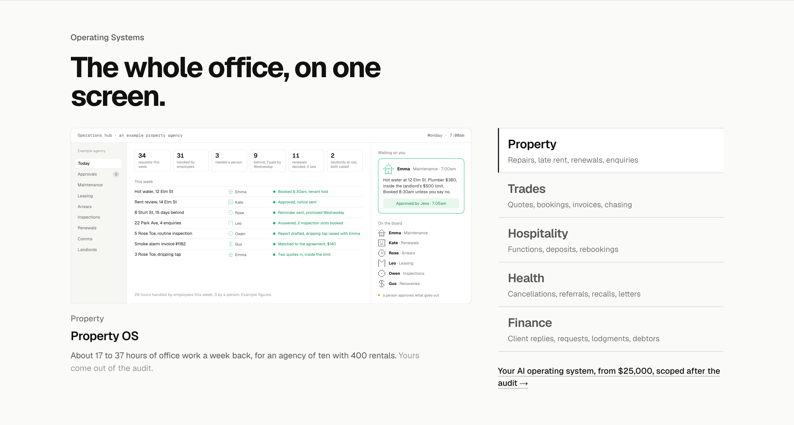
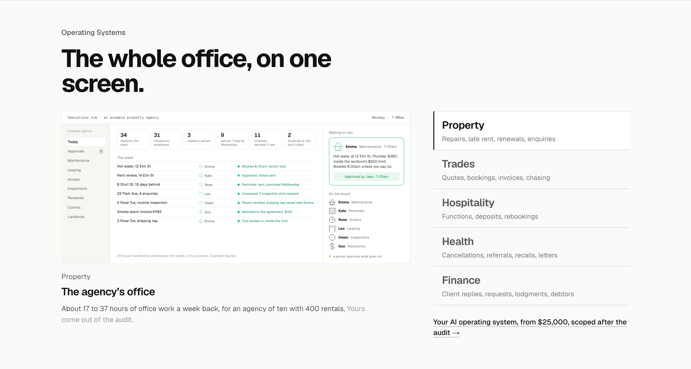
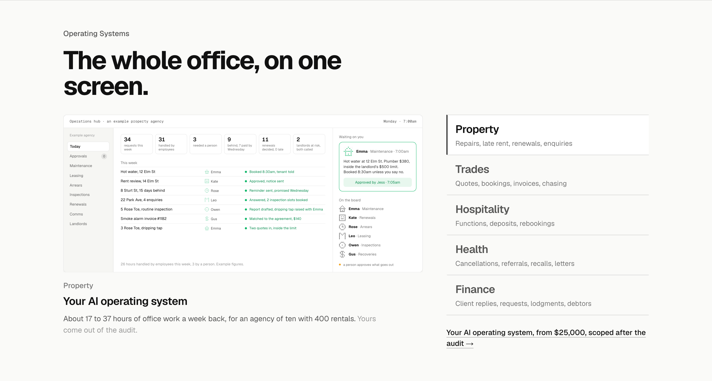

Operating Systems: the system’s name three ways
The title under the screen, after "Property OS" was picked and doubted. Three names that are names rather than descriptions, each shown for Property; the same pattern applies to the other four. Everything else is as built.
Today“Property OS”Named like the rung. Short and owned, but OS is software jargon, and it makes the thing sound like a product on a shelf when the price line says it is built and scoped.

1. The family name“Herbert for Property”The company’s name with the industry: Herbert for Property, Herbert for Trades, Herbert for Health. A name rather than a description, no jargon, and it scales to the plan where each system becomes a product beside Herbert Reach. Recommended.
2. Whose office“The agency’s office”Matches the heading: the whole office, on one screen, and this is whose. The agency’s office, the trade office, the venue’s office, the clinic’s office, the practice’s office. Concrete, and different for each; the weakest is the trade one.

3. The rung, said once“Your AI operating system”The same title under every screen, the industry label above it doing the telling. Honest to the ladder and never jargon-free, since OS is spelt out; five identical titles as you click through.
